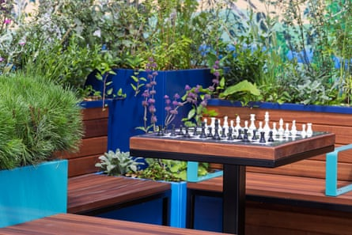
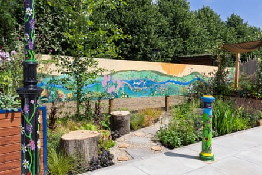

Mini-gardens that fit inside a parking space have been presented by a council at Hampton Court flower show as part of a drive to make public spaces less car-focused.
Three gardens created by Surrey county council are on display at the show to demonstrate that areas used as parking spaces can give far more benefit to the community if they are thoughtfully designed as mini-parks.
The project, which won a silver medal at the show, used a standard 2.4 by 4.8 metre parking space for each of the gardens, which will be relocated across Surrey. They contain easy-to-maintain plants such as jasmine bushes, and useful features such as chess sets, benches and gravel pathways flanked by pollinator-friendly flowers.
Judges said it was “astonishingly clever” to create gardens in such small public spaces. They said the garden creates a feeling of being cocooned away from the hustle and bustle of daily life.
One of the gardens, destined for Walton-on-Thames, features a chess set.Photograph: RHS/Neil Hepworth
The designers say they are trying to move from a car-first urban design to creating “healthy streets for Surrey”. They have a £2m fund to create these mini-gardens across the county in place of parking spaces.
Helen Currie, a place-making specialist at the council, said: “We are trying our hardest to encourage people to want one of these in their vicinity. Whilst we can get them built and installed, we then need volunteers to come and maintain them. Our budget only stretches so far, so we’re always looking for groups that will offer to maintain them once they’re in the ground – so, weeding and watering – and they’re all designed so that the plants we’ve chosen are there to come back year on year.”
One of the parklets, which will be relocated to a street in Walton-on-Thames, contains planters with built-in seating and a table with a chess board. It has plants proven to soak up street pollution including cotoneaster, and trees including forest pansy and field maple for shade. They also created a rain garden, which will be relocated to Cranleigh, that contains kerbs with gaps allowing water to run off the road into the planted area. It contains water-loving plants such as sage and masterwort, as well as a birch tree which can handle wet conditions and dry spells alike.
The third garden is designed for birds and people, with a birdbath that collects rainwater and built-in seating for pedestrians. It features jasmine canopies which provide shade. This will be relocated to Guildford town centre.
Alex Baldock, from the council’s place-making team, said: “We work with community to develop a holistic solution that’s not just focused on one aspect: the car. A lot of our town centres are becoming more service oriented, rather than solely retail focused, and therefore it needs to be more inviting for people, and encourage people to interact with each other and spend time in nature.”
The gardens feature robust plants that the designers say will require minimal maintenance by volunteers.Photograph: RHS/Neil Hepworth
Currie added that creating parklets among parking spaces was more inclusive: “It’s showing it’s not for just one person driving a car, but it also provides for somebody who might not be able to walk that far, who might be able to walk to one of these, sit down, rest, and then continue their journey on by foot, which environmentally is a much better message.”
They said that people who are interested in using parking spaces in their local areas for these mini-gardens should get in touch with their local council, some of which have funding for these projects.
Currie added: “There was definitely a period of time where we just wanted to look after the car, car drivers, whereas now, we’re probably never going to get rid of the cars, all of them, but let’s just make it a nicer place that people don’t have to drive, and they can walk, or they can cycle, or they can do a mixture of both, on the way to wherever they’re going.”